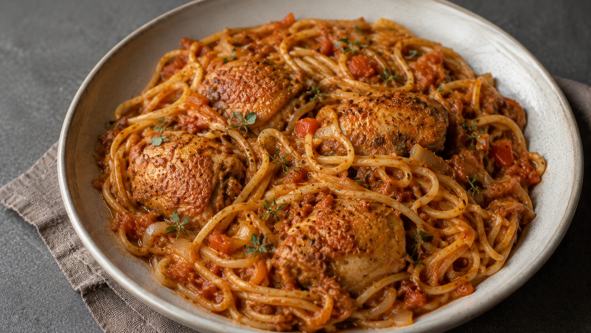

A comforting one pot chicken and spaghetti dish cooked in a rich tomato, paprika, garlic, and white wine sauce.
The chicken is gently stewed until tender, then the spaghetti cooks directly in the sauce so it absorbs all the flavor.
Serves: 3 to 4 portions
Preparation Time: 15 minutes
Cooking Time: 45 to 55 minutes
Pat the chicken pieces dry if they are very wet.
Season the chicken with salt, black pepper, 1 teaspoon of sweet paprika, and about half of the white wine.
If you have time, let it sit for 15 to 30 minutes. If not, you can continue straight away.
Estimated time: 10 to 15 minutes
Finely chop the onion and garlic.
If using carrot, peel it and cut it into thin slices.
Keep the spaghetti nearby. If your pan is not wide enough, you can break the spaghetti in half before adding it later.
Estimated time: 5 minutes
Heat the olive oil in a large saucepan over medium heat.
Add the onion and bay leaf. Cook for 8 to 10 minutes, stirring occasionally, until the onion is soft, golden, and fragrant.
Add the garlic, carrot if using, and tomato paste. Stir well and cook for 1 to 2 minutes.
This step helps remove the raw taste of the tomato paste and gives the sauce more depth.
Estimated time: 10 to 12 minutes
Add the chicken pieces to the pan.
Let them cook for 3 to 4 minutes on each side, until they begin to take on some color.
Do not stir constantly. Letting the chicken sit against the bottom of the pan helps build flavor.
Estimated time: 8 minutes
Add the remaining white wine.
Scrape the bottom of the pan with a wooden spoon to release any browned bits from the onion, tomato paste, and chicken.
Let it bubble for 2 to 3 minutes so the alcohol cooks off slightly and the flavor concentrates.
Estimated time: 2 to 3 minutes
Add 700 ml of hot water or chicken stock.
Add the remaining 1 teaspoon of sweet paprika, black pepper, chili flakes if using, and oregano or thyme if using.
Stir well, bring to a gentle simmer, then partially cover the pan.
Cook over medium low heat for 25 to 30 minutes, until the chicken is almost fully cooked and the sauce is rich and flavorful.
Stir gently every 5 to 10 minutes, just to make sure nothing sticks to the bottom. Do not stir too often, as this can break up the chicken.
Estimated time: 25 to 30 minutes
Check the liquid before adding the spaghetti. The sauce should look fairly loose, almost like a light soup, because the spaghetti will absorb a lot of liquid.
Add a little more hot water if needed.
Add the spaghetti directly to the pan, pushing it gently into the sauce as it softens.
Cook for 8 to 10 minutes, stirring more often during the first few minutes so the spaghetti does not stick together or stay above the liquid.
Estimated time: 8 to 10 minutes
When the spaghetti is just tender and the sauce is creamy but still slightly loose, turn off the heat.
Taste and adjust the seasoning with salt and black pepper.
Add a small drizzle of olive oil if desired, then let the dish rest for 5 minutes before serving.
The spaghetti will continue to absorb sauce as it rests, so avoid reducing the sauce too much before turning off the heat.
Estimated time: 5 minutes
Serve warm, with the chicken pieces over the spaghetti and plenty of sauce spooned on top.
For a more rustic meal, serve with bread on the side to enjoy the sauce.
Grated cheese is optional, but the dish also works very well without it.
Spaghetti cooked directly in the chicken sauce absorbs much more flavor than spaghetti cooked separately.
The key is to keep enough liquid in the pan before adding the spaghetti. If the sauce becomes too thick while the pasta is cooking, add a splash of hot water and stir gently.
Do not stir constantly while the chicken is stewing. Stir occasionally during the chicken stage, then stir more often once the spaghetti is added.
For a saucier result, use 250 g of spaghetti. For a thicker, more pasta heavy result, use up to 300 g, but you may need extra hot water.